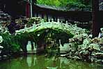
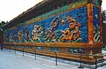
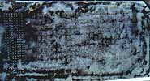

|
Written by Al Wong
(Write to me)
This is my experience in Beijing, China in the Summer of 1999. If you came to this webpage first, it's better if you start from the beginning of the story.
Today's activities include:



This park seems to be a hangout for the locals. I saw
retirees performing/teaching Kung Fu forms with staff
and sword. Other locals were practicing Chinese calligraphy
using water and the cement squares on the floor.
One lady, who was ambidexterous, drew two Chinese characters
on the floor with each hand at the same time!
You may also rent out boats and paddle around on
the lake.
We only had 2.5 hours to walk around the place and it was
not nearly enough to see everything. I would definitely like to go
back and see this park again sometime.
Then at 5:50pm I woke to Cathy's sepulchral voice screaming down the
hallway! Dinner call. Some of our group has decided
to go for the shampoo, haircut, and massage again and they
have to get to the hair salon early because there are about
10 people going. So they have to eat fast.
I decide to pass on the hair salon as I don't need
a haircut now. Also, 7 more high school and
college teachers are arriving
later tonight to join us in our tours. It looks like the
minibus will be getting full.
After dinner, I decided to go to the cyber cafe to upload
a couple new entries and check my email. I'm glad I did.
I received 8 new email messages at Yahoo and was finally
able to TELNET into Primenet! I had 170 new email messages there!
Needless to say, I cleaned out my email file. I was at the
cyber cafe for 93 minutes and it cost me $9.00RMB.
This is approximately 1.2 cents (US) per minute!
The round trip cab fare to the cyber cafe costs more than this!
I got back to the language academy around 8:15pm and just caught
Andrew at the entrance
leaving for the NASA disco again! The guy is a wildman.
He was kind of peeved because he had to wait 45 minutes to get
permission from Cathy to go.
Andrew was open for company and, although
my knees were hurting, I decided to go with him. We only have
one more week left in Beijing! I put on some long pants and
we were off.
As always, it was great at the NASA disco. They charged us
$50.00RMB for admission this time. I thought the high admission
fee was because it was Saturday. It turns out they have a
stage show around 10:40pm!
We had a good time dancing at the disco tonight. Part of it was
our time in Beijing was growing short and we went for the gusto.
The funny thing was Andrew was watching the time to leave and
I wasn't. It was an interesting switch. Anyway, just as we were
leaving, they started a stage show with dancers! Groaning to
ourselves that we couldn't stay longer to watch, we left the
disco and took a cab back to the language academy and made it
back just at 11pm.
Just in case I haven't mentioned it, the gates to the
language academy are supposedly
closed and locked at 11pm and the night watchman
goes to bed. We would have to cause quite a commotion
to get in after the gates close. So 11pm is our curfew.
The gates open in the morning at 5:30am.
Also, the doors to our floor leading to the stairs are locked
at 9:30pm. So you have to use the elevator if you are arriving
later than that. This is for "security" reasons.
What do we do in the event of a fire at night,
I don't know. Dive out the windows, I guess.
|